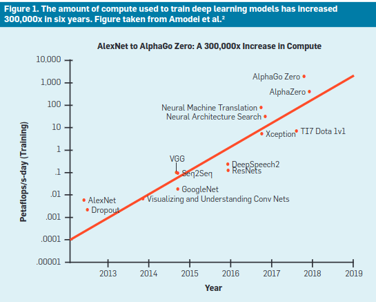
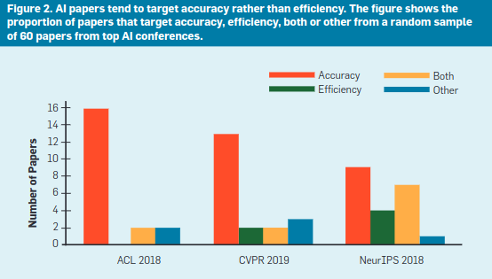

Performance VS efficacité
La frugalité d'une IA va donc dépendre de plusieurs choses: De l'architecture du modèle, de la méthode d'entrainement, des hardwares utilisés pour l'entrainement et l'inférence, et plusieurs autres facteurs. Certains de ces facteurs, comme le hardware ne vont pas impacter la performances du modèle, si ce n'est sur le temps d'entrainement et d'inférence, mais à moins que le hardware soit réstrictif pour l'architecture, le choix d'un GPU ou d'un autre ne va pas faire baisser les performances du modèle. Quand on entraîne un modèle, on l'entraîne à maximiser une métrique de performance comme l'accuracy, la précision, le rappel, le F1 score, etc. On veut que le modèle soit le plus performant possible, et c'est normal. Quand on va comparer des modèles entre eux, on va regarder ces métriques, et on choisira le modèle qui maximise certaines métriques. On peut voir ça comme la performance du modèle, et dans la majorité des cas on souhaite la maximiser. C'est normal, si on fait un modèle qui doit détecter des tumeurs dans des IRMs, on veut forcement que le modèle rate le moins de tumeur possible et qu'il les segmente de la manière la plus précise possible. Mais pourquoi ne pas essayer de faire des modèles un tout petit peu moins performant, mais en réduisant la consommation de ressources ? C'est là que l'efficacité intervient. Depuis 2012, le domaine de l'intelligence artificielle a connu un progrès remarquable sur de nombreux domaine, dont la reconnaissance d'objet, les jeux, la reconnaissance vocale, la traduction automatique et biend d'autre. Ces progrès dans ces domaines on été réalisés par des modèles d'apprentissage profond (deep learning) qui demande une grosse quantité de calcul.  La figure 1 mets bien en évidence l'évolution du coût d'entrainement des modèles états de l'art de l'apprentissage profond entre 2012 et 2017, le modèle n'ont fait que grossir depuis. Le même constat peut être fait sur les modèles de traitement du langage naturel (NLP) de ELMo à GPT-3. Pour aller plus loin [trubell, E., Ganesh, A. and McCallum, A. Energy and policy considerations for deep learning in NLP. In Proceedings of ACL, 2019] estime l'empreinte carbone de certains modèle de NLP et montre que la tendance est en effet la création de modèle qui dont l'objectif n'est pas de rendre des modèles plus efficace. De plus, le problème de la création de modèle toujours plus gros, est que leur entrainement demande énormement de ressources, et coûte donc très cher. Ce qui pose problème car uniquement les laboratoires avec de gros moyens peuvent travailler sur ce genre de modèle, peuvent les comparer, et donc peuvent faire avancer la recherche dans ce domaine, et bien souvent leur objectif est de produire un modèle encore plus puissant que le précédent. Certains papier définisse ce genre de modèle comme RedAI, en opposition à la GreenAI qu'on a présenté ici  La figure deux présente la proportion de papier qui visent a maximiser une métrique de performance comme l'accuracy, ou l'efficacité ou les deux. Trois grosse conférence d'apparentissage profond sont pris en compte, NeurIPS, CVPR et ACL. On remarque très facilement que les papiers publiés visent majoritairement à maximiser la performance du modèle, et très peu visent à maximiser l'efficacité du modèle. Par ailleurs, NeurIPS semble être la conférence qui équilibre le mieux la proportion de papier qui visent la performance et l'efficacité. Par ailleurs, la relation entre la performance d'un modèle et sa complexité (mesuré en nombre de paramètre ou temps d'inférence) a logntemps été considéré comme étant logarithmic. C'est à dire que l'on doit énormement augmenter la complexité d'un modèle pour augmenter légèrement ses performances. On peut aussi ajouter que en général, les modèles plus complexes, comme des modèles qui résulte de l'assemblage de plusieurs couches différentes, possède un nombre plus importants d'hyperparamètres. Au moment d'entrainer ce modèle pour obtenir les meilleurs résultats, on va essayer plusieurs combinaison de ces hyperparamètres, et plus le nombre d'hyperparamètres est grand, plus le nombre de combinaison à essayer est grand. Et pour tester chacune de ces combinaisons, on doit entraîner le modèle. C'est l'étape qu'on appelle le fine-tuning, et cela peut être très couteux sur certins modèle. Donc il n'est pas forcement très bénéfique de créer un modèle très complexe pour gagner quelques points de performances, car cela peut être très couteux en temps et en ressources. Outre le coût astronomique qu'implique l'entrainement de certains modèle, la difficulté à reproduire des résultats mène à des comparaison qui ne sont pas évidente à faire. Parfois, l'architecture exact d'un modèle et les données utilisées pour l'entrainement ne sont ni clairement spécifé ni accessible en open source. Même si ce n'est pas forcement le sujet ici, produire des modèles et des jeux de données open-source (tout en respectant les données privés et toutes les lois qui régulent ce choses là) semble être important pour permettre de progresser dans le domaine. En énonçant tout les problèmes cités ici, on commence donc à avoir quelques pistes pour réduire l'impact de nos modèles: Utiliser des modèles moins complexe, essayer d'utiliser des modèles avec peu d'hyperparamètres, ou alors n'en faire varier que quelques-uns pour limiter le nombre de combinaison à étudier pendant le fine-tuning, en bref, le choix du modèle semble important...